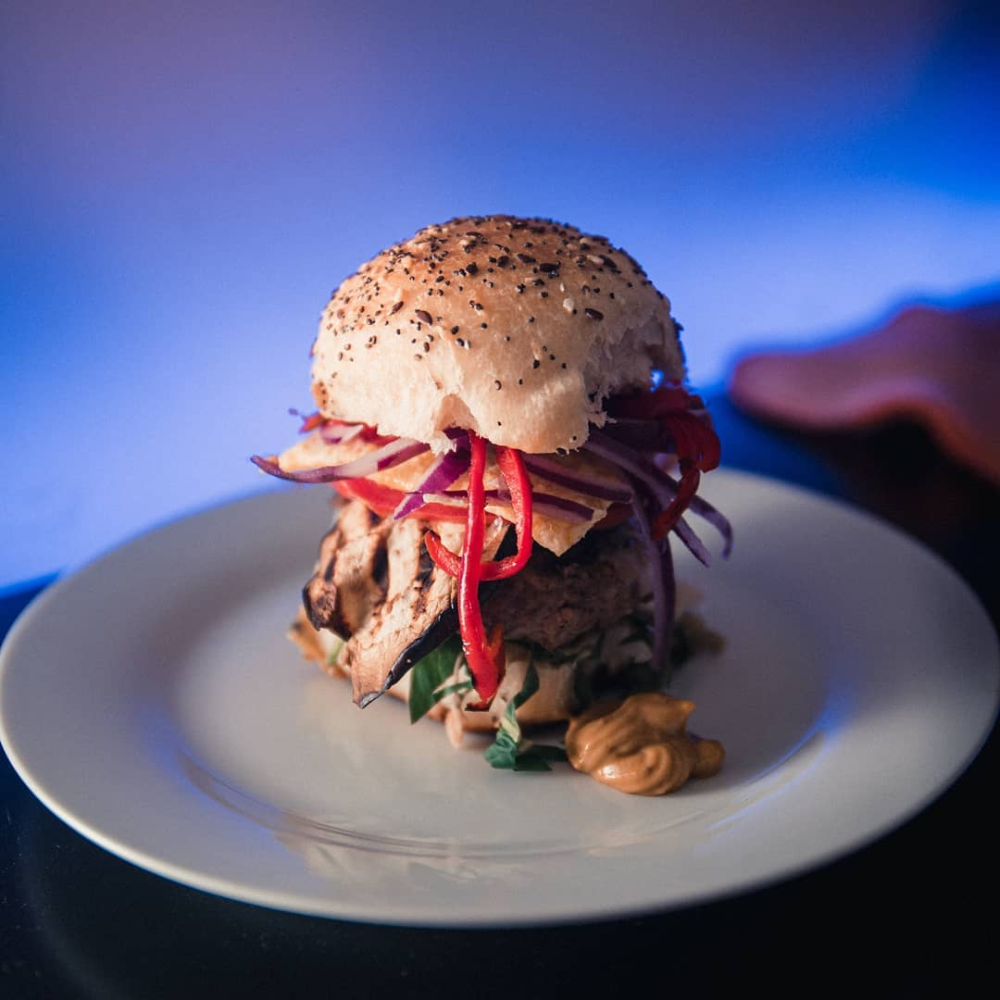
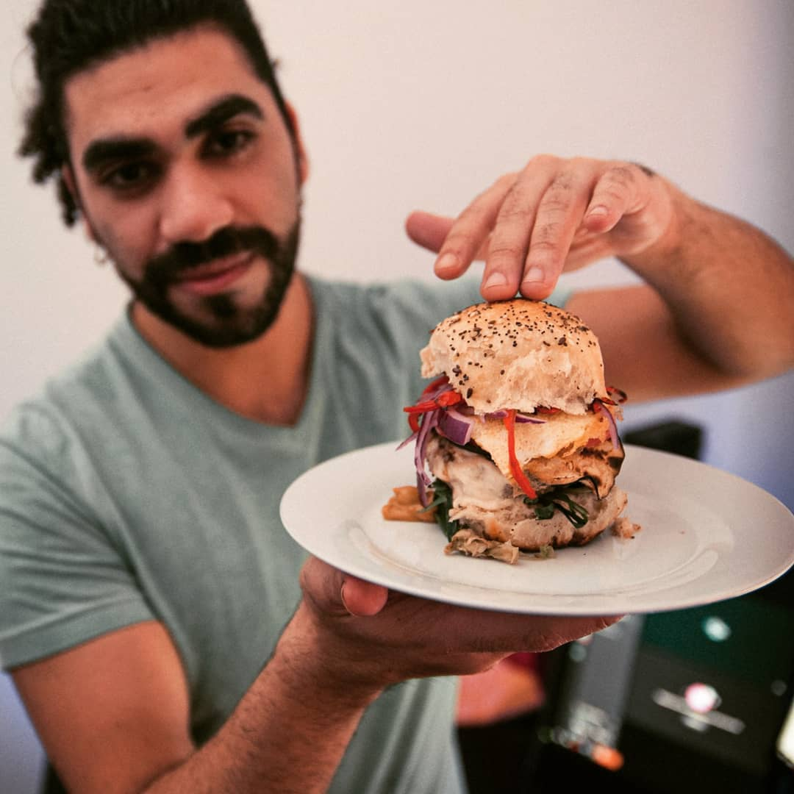
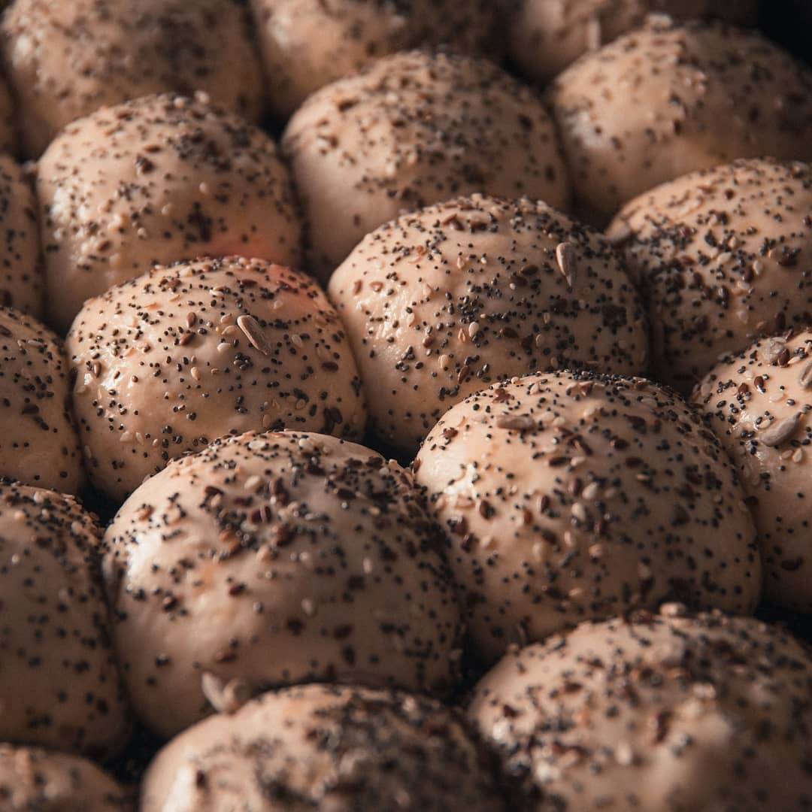
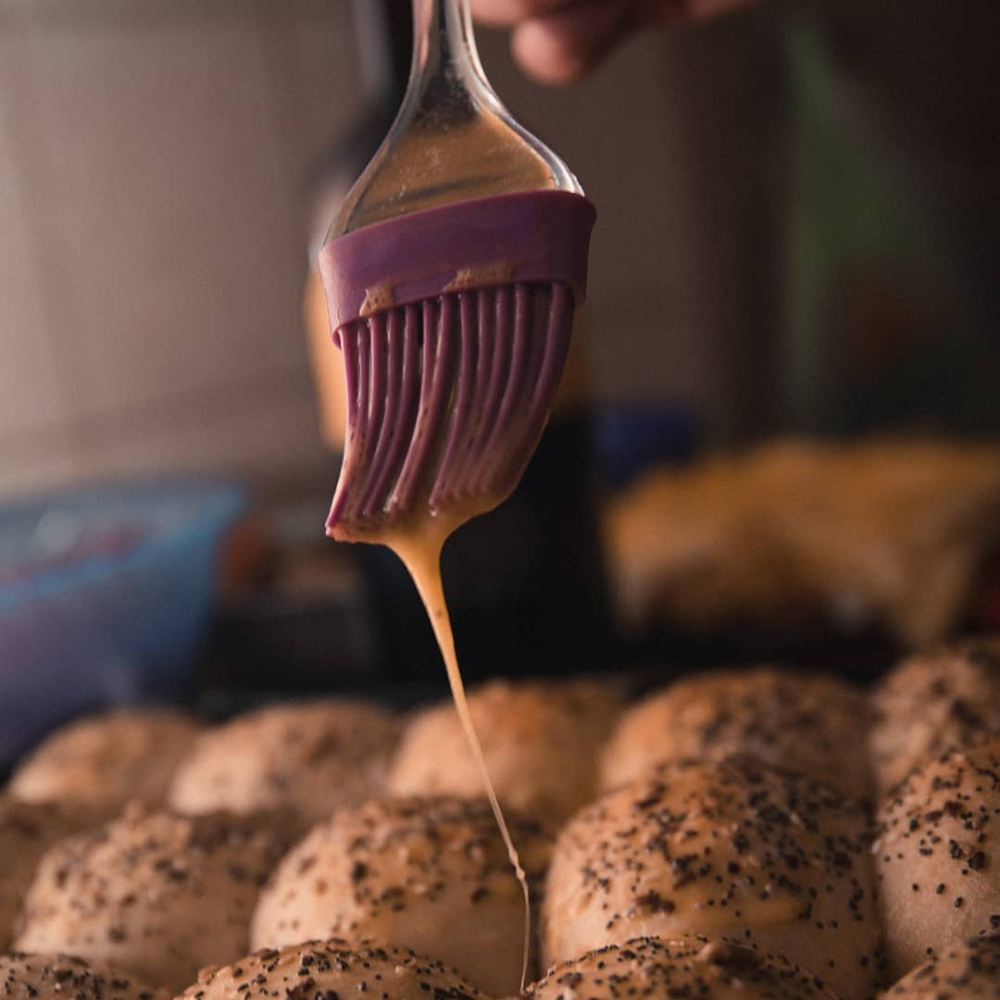
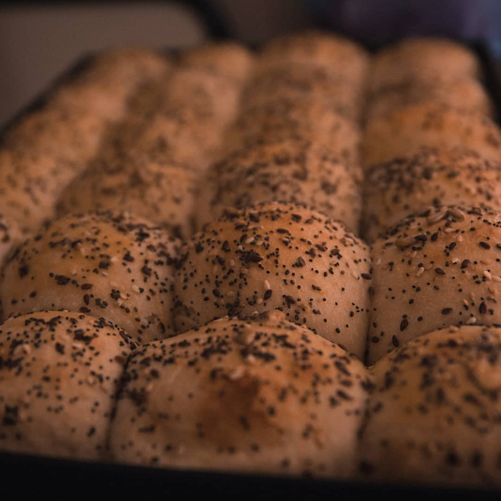

Pizza napolitana
Masa de fermentación lenta, borde alveolado, cocción a alta temperatura. Clásicas y de autor.

Chef · Pizza & masas caseras
Fernando Sánchez hace pizza napolitana y panadería artesanal a mano, con fermentación lenta y sin apuro — desde el amasado hasta la mesa.

Sobre mí
Soy Fernando Sánchez. Me formé cocinando todos los días, probando y volviendo a probar, hasta que la masa hace lo que tiene que hacer. Trabajo la pizza napolitana y la panadería casera con fermentaciones largas, harinas simples y mucho tiempo — el ingrediente que nadie ve pero que se nota en cada bocado.
Además de pizza, me gusta llevar esa misma idea de masa artesanal a otras creaciones: panes de autor, burgers con pan casero y platos donde la base siempre se hace desde cero.
Especialidades
Masa de fermentación lenta, borde alveolado, cocción a alta temperatura. Clásicas y de autor.
Panes, focaccias y bollería hecha desde cero — de la mezcla al horneado, sin premezclas.
Platos y burgers con pan propio, pensados para eventos privados y mesas a medida.
Proceso

Cada bollo se forma a mano y descansa el tiempo que necesita — no el que apura la carta.

Un barnizado a mano antes del horno — el paso chico que marca la diferencia en la corteza.

Corteza dorada, miga liviana. Ahí se nota si la masa estuvo bien hecha.
Galería
Contacto
Cuentame la fecha, cuántos son y qué tenías en mente — armamos la propuesta juntos.